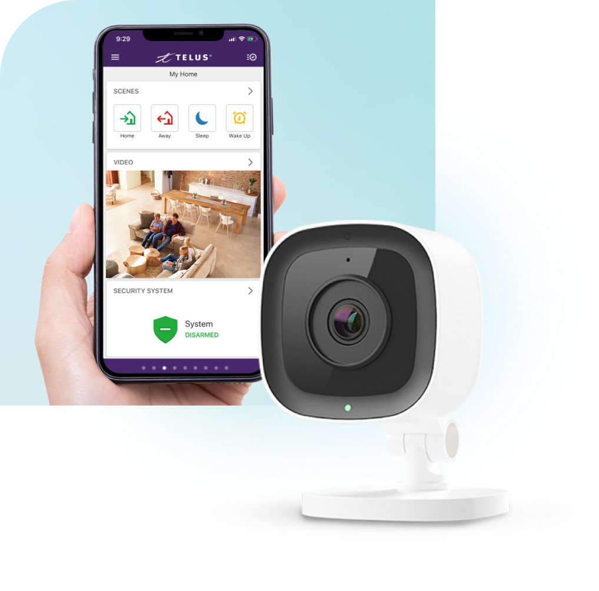
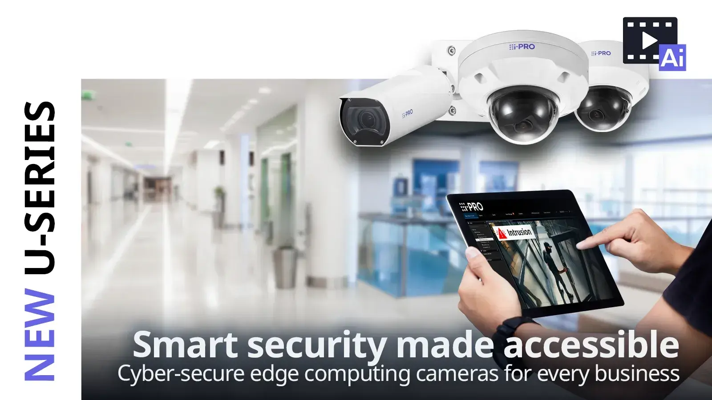
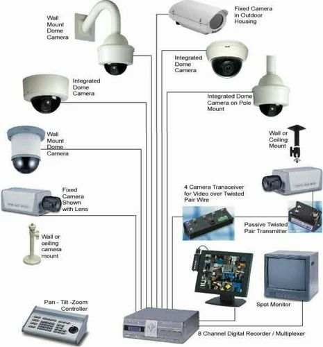
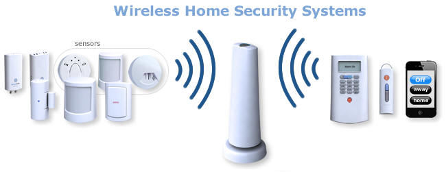

CCTV & Sistem Keamanan Batam
Sistem kamera pengawas terdepan untuk keamanan optimal di Batam. Kami menyediakan solusi CCTV lengkap mulai dari perencanaan, instalasi, hingga maintenance untuk melindungi aset dan properti Anda.
Solusi CCTV Terdepan untuk Keamanan Optimal
Solusi Teknologi Batam menyediakan sistem CCTV dan keamanan yang komprehensif untuk berbagai kebutuhan, mulai dari kantor, pabrik, hingga properti residensial. Dengan teknologi terdepan dan tim berpengalaman, kami memastikan sistem keamanan Anda berfungsi optimal 24/7.

Produk dan Layanan CCTV Batam

CCTV IP Camera HD/4K
Kamera pengawas dengan resolusi tinggi untuk pengawasan detail dan jelas.
- Resolusi HD (1080p) hingga 4K Ultra HD
- Night Vision hingga 30 meter
- Weatherproof IP67
- Wide Dynamic Range (WDR)
- Motion Detection & Alerts
- Remote Access via Mobile App

DVR/NVR Recording System
Sistem perekaman video untuk menyimpan dan mengelola footage CCTV.
- 4, 8, 16, hingga 32 Channel
- Hard Disk hingga 6TB per slot
- H.264/H.265 Compression
- Remote Viewing & Playback
- Backup ke External Storage
- RAID Protection

Mobile Monitoring System
Aplikasi mobile untuk monitoring CCTV real-time dari smartphone atau tablet.
- Real-time Live View
- Push Notification Alerts
- Playback & Download Video
- Multi-camera View
- PTZ Camera Control
- Offline Recording Access
Cloud Storage & Backup
Penyimpanan cloud untuk backup video dan akses remote yang aman.
- Automatic Cloud Backup
- Encrypted Storage
- Remote Access Anywhere
- Long-term Storage Options
- Bandwidth Optimization
- Disaster Recovery
PTZ (Pan-Tilt-Zoom) Camera
Kamera dengan kemampuan pan, tilt, dan zoom untuk area pengawasan yang luas.
- 360° Pan & 90° Tilt
- Optical Zoom 20x-30x
- Auto Tracking
- Preset Positions
- Tour Mode
- Weatherproof Design
Access Control Integration
Integrasi CCTV dengan sistem kontrol akses untuk keamanan yang terpadu.
- Face Recognition Integration
- Card Reader Integration
- Biometric Integration
- Event-based Recording
- Unified Management System
- Real-time Alerts
Proses Instalasi CCTV Batam
Survey & Konsultasi
Survey lokasi untuk menentukan titik strategis pemasangan kamera dan kebutuhan sistem.
Design & Planning
Installation
Instalasi kamera, kabel, dan peralatan dengan standar profesional dan rapi.
Configuration & Testing
Konfigurasi sistem dan testing untuk memastikan semua fungsi berjalan optimal.
Training & Handover
Pelatihan penggunaan sistem dan penyerahan dokumentasi lengkap.
Aplikasi CCTV untuk Berbagai Sektor di Batam
Kantor & Perusahaan
Monitoring keamanan kantor, ruang meeting, dan area publik untuk melindungi aset perusahaan.
- Reception & Lobby
- Parking Area
- Server Room
- Production Floor
Pabrik & Industri
Sistem keamanan untuk area produksi, gudang, dan perimeter pabrik di Batam.
- Production Line
- Warehouse & Storage
- Perimeter Security
- Quality Control
Residential & Villa
Keamanan rumah tinggal, villa, dan kompleks perumahan dengan teknologi modern.
- Front Door & Gate
- Garden & Pool Area
- Garage & Parking
- Perimeter Fence
Retail & Commercial
Sistem keamanan untuk toko, minimarket, dan area komersial dengan anti-theft features.
- Sales Floor
- Cashier Area
- Stock Room
- Parking Lot
Mengapa Memilih CCTV dari Solusi Teknologi Batam?
Brand Terpercaya
Menggunakan produk dari brand ternama seperti Hikvision, Dahua, dan Axis dengan garansi resmi.
Installation Profesional
Instalasi dilakukan oleh teknisi berpengalaman dengan standar kualitas tinggi.
Support 24/7
Garansi Lengkap
Semua produk dilengkapi garansi resmi dan layanan purna jual yang terjamin.
Harga Kompetitif
Menawarkan harga yang kompetitif dengan kualitas terbaik di Batam.
Teknologi Terdepan
Selalu menggunakan teknologi terbaru untuk memberikan solusi yang efisien.
Siap Memasang CCTV untuk Keamanan Optimal?
Hubungi kami sekarang untuk konsultasi gratis dan survey lokasi. Dapatkan sistem CCTV terbaik untuk melindungi aset Anda di Batam.
Dokumentasi & Tautan Internal
Akses cepat menuju informasi penting mengenai layanan kami.